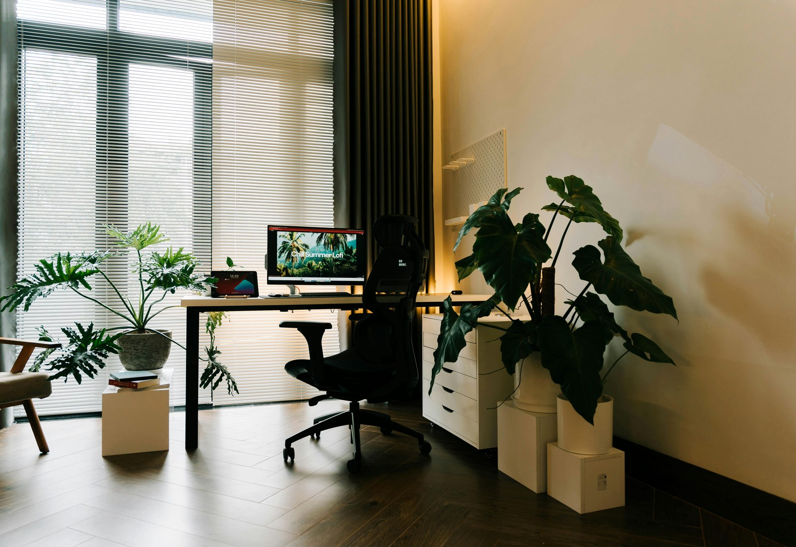
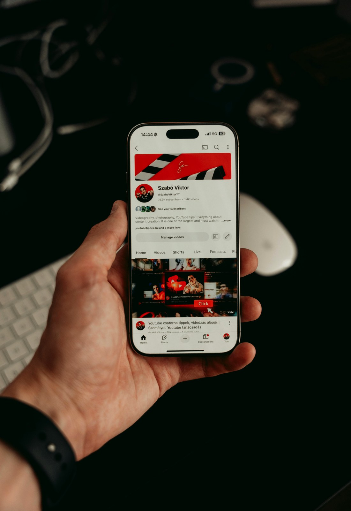

Brand website

WordPress content site
把文章、案例與服務內容整理成可持續更新的內容站。
適合需要後台管理、文章模組與內容經營節奏的 WordPress 架站需求。
App showcase page
把功能、流程與下載行動整理成更清楚的展示頁。
適合需要介紹 App 功能、操作流程或活動導流的展示型頁面專案。SEO growth case
把網站結構、內容規劃與搜尋曝光一起放進同一個案例。
適合需要同時整理頁面架構、關鍵字方向與自然流量基礎的專案。Cloud operations
把部署、備份、穩定性與後續維運也整理進完整交付裡。
適合需要正式上線、主機代管、備份監控與後續維護的雲端部署需求。Website / UX
多裝置體驗
網站、WordPress 後台與 App 展示頁，都要在桌機、平板、手機上維持一致的閱讀與操作節奏。
DesktopTabletMobile
3主要裝置
RWD版型延伸
WordPress / SEO
內容管理
當案例牽涉到 WordPress 與 SEO，後台更新流程、分類結構與文章模板會直接影響後續經營效率。
文章模組服務頁分類架構
CMS可更新
SEO可擴充
Why this works
同一個案例，同時看得到建置、曝光與維運。
真正有價值的數位專案，不只把網站做出來，還要能被找到、被更新、被穩定運行。
WebsiteWordPressSEOCloud
24/7穩定上線
1 flow整合交付
Case narrative
好的數位專案，不只是一個漂亮網站，而是可以持續經營的入口。
我們會把網站架構、WordPress 更新流程、SEO 基礎與雲端主機一起放進案例裡，讓客戶更容易理解完整交付內容。
Deliverables
- 網站架構重整
- WordPress 後台規劃
- SEO 基礎設定
- 雲端主機部署
BBefore
Before
需求分散在不同工具與窗口，維護成本高
原本只有零散頁面或單頁介紹，內容更新與上線流程都不夠完整。
AAfter
After
建置、內容、曝光與主機部署被整理成同一套流程
網站更容易理解、後續更容易更新，也能更快進入正式營運。
OOutput
Output
可延伸到網站改版、WordPress 成長站、App 活動頁與維運方案
這套骨架不只適合展示，也能直接往正式商業專案延伸。